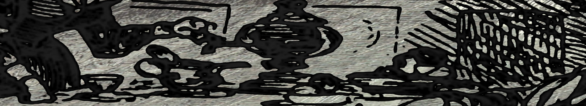

|  |
Chapter 3: He Finally Got a Piece of the Pie.
The moment Studcutt Johnson stepped out of the hospital, he saw nothing in his future. His vision of 'Convergence Point' simply started to wane after awhile. He was no longer Studcutt then, he was Norman; Norman Jonsstone. His father was dead; he had nobody to go back to with hat in hand. He knew that he danced his last dance; one day he decided to reinvent himself as Rockcutt Wild Partyman. He was thinking that he could transfer that charisma he had handling his serpent into a guitar. He didn’t know how to play but, I mean, “There is so many instructional books on tape that a monkey could probably learn.” He wanted to reinvent himself but knowing somebody would recognize who he was, he didn’t falsify anything. Unlike when he told the cops that he didn’t attempt to commit suicide. Instead he said that he was an illegal onboard passenger of that train. He did it in order to get out of the hospital. They decided, out of sympathy for how pathetic he was, not to charge him with anything. Even though some think falsifying access to a failing travel industry is an unforgivable civilly unjust act. More on that later. When he put pen to paper, his hand started moving immediately. It just couldn’t stop:
" I was once Studcutt
Had a rock-hard butt
But now I’ve changed
Blues soul is my new game
I no longer dance
But I like to sing
From New York to France
Rock means everything!
Presto, he was a new man.
~
Brady Royce was not injured in the slightest from the train accident. He could not explain why. Nobody could. He was brought to the hospital, anyway. He felt sick in the head. They did a catscan. There was no brain damage. He felt sicker. Particularly, in the head. He didn’t drive home, he felt sick when he saw anything in motion; the clouds moving sickened him. He drew whatever bag he could find, and put it over his head. It was a pillowcase from the hospital. He connected rideshares from city to city until he finally got to his home. It took over five thousand dollars to get him there. His wife had to cart him off to the door. The pillowcase he put on his head was breathing, seemingly more than he was. He did not cut eyeholes or holes of any kind in it. He didn’t speak a word when he arrived. He wrote down on a notepad everything he wanted to communicate to her. He didn’t remove his pillowcase until he was in his room.
From there on, he ran away like a scared puppy when the room he was in had too much light. He broke his phone, he hid from his employers, he never left his house. The only time he’d speak was to scream at his wife. He would call her a ‘cunt’ a ‘whore’ a ‘shit-for-brains’ - anything. Anything he could say to her to drive her away from him he would. He would do that with anybody who approached. He’d tear her apart, insult her family, bring back her worst traumas, her childhood fears – then he would laugh through all of it. He would make her feel useless, or as useless as he could. She couldn’t even slide the mail under the door. He’d tear it to shreds, spit on it, wipe his ass with it, piss on it, rub his nose with it, bleed on it, anything… it didn’t matter. So, he was in his corner, in his room, all day. He refused any donations or any form of severance. He refused to do anything, as if there was no future left. He had a rare collection of childhood toy trains that he broke into pieces. He used to keep them in mint. He stopped bathing; he stopped going to the bathroom in the bathroom; he eventually stopped dressing. He was reeking, sprouting hair in all places, walking with a hunch, and dragging his knuckles. They were out of money, she loved him regardless, but she didn’t make enough money to pay for the both of them. She had to call the police.
The cops brought in the dog catchers. They put him in a straightjacket; he ended up in a padded cell. He would stare at the wall, laughing all day, every day. He would roll on the ground just for entertainment. He would try to break his head over the wall. He would bite his food servers. They began feeding him through a slot in the door. He’d bite down his own tongue - nearly got it detached. They injected a serum in his gums to prevent him from biting down on anything via severely numbing the nerves. So, he’d sit in the corner with trails of drool pouring down his bottom lip. His top lip got so chapped it split and was bleeding down into the spittle from the bottom. The lights were too bright for him then too, too bright for him to think. Studcutt may have veered off from nothing, and found false hope, yet Brady Royce fell headfirst into nothing, hit something somehow, and broke his brain on the way down. He is still, to this day, falling.
~
The Chief Legal Executive of Amtrak, Werner Glade, visited Brady in the reception area. They had a nice lunch together, with thick glass in between them, and beside armed thugs in white scrubs on both sides - particularly Brady’s. The lighting was like midday. It was evening but the filtration of light made the facility seem two hours earlier, at all times. Werner Glade was having a ham sandwich with American cheese on cornbread smothered in pesto – he was an odd character. Through a straw, Brady was sucking down some kind of thick kiwi-colored goop with chunks of assorted things in it; some parts looked like skinned half cherries, others like globs of overcooked roast. Brady’s eyes did not move, he was in a straight jacket and, throughout, his only bodily functions were relegated to deep breaths. In fact, he kept a perfect tempo that was counter to every emotion he was feeling, and was not altered by a single external stimulus.
Werner continued an ongoing one-sided discussion “...it’s ok to take a little money, Brady. You need it. You are obviously not well.” Brady spat hard into his straw and swallowed it back up his mouth, down his throat. That was the only reaction he had been giving up to this point. Deciphering the meaning of this gesture had been quite the challenge to Werner. “Look, I know you’re a perfectionist, Mr. Royce. But this is ridiculous. You know that we at Amtrak don’t mistreat our employees. You’re giving a false impression of what we’re about. You were exhausted, you made a mistake, we all do. We are looking into productive policy changes as we speak to ensure it cannot happen again. If you wouldn’t have went on this self destructive path you would still have your job. We had no intention of firing you. We would have just given you some paid time off for mental wellness rest. Is it fair we should take responsibility? We don’t want to give the impression that this is a normal reaction to our working conditions. This whole mistake, which is not your fault at all, or ours, has been giving us a bad rep, as is.” Werner Glade then said, putting his sandwich down, reaching down between his legs, and pulling up a briefcase which he placed on the shelf in front of the glass window.“I just… We here at Amtrak don’t think it’s fair that you are giving us such a bad image, as if we would abuse our finest conductor for a single mishap. So, in order to set the record straight, I’d like to leave some of these documents with you. Just stating you quit on your own volution, and that the mental state you arrived in was of your own doing, unrelated to the working conditions. I mean, that’s harsh, but it’s fair, right? Also that you were working extra hours on certain dates without informing us through proper channels. Also that your exhaustion came largely from unreported loss of sleep off the clock. I marked everywhere to sign, and spoken to your care provider about this...”
Werner pulled out a stack of papers from his briefcase. It was about as thick as three college ruled notebooks stacked on top of each other. He turned to one of the security staffers to his left. “...Is there a slot or something that I...” The security staffer simply ripped the papers out of his hands. “...Look, is all of this necessary? I mean, He wasn't tried for a crime. This isn’t jail, is it?”
“Sir, this is Section G6.” The security staffer rebutted sternly.
“Yes, well, I’m obviously staring at a vegetable here. What harm can he do?” Werner said in response. He obviously offended Brady as Brady stopped slurping through his straw. Werner then held his hand out in front of the glass; open palm, all friendly-like. “...For the record, I didn’t say that. Or… I mean, mean it. You’re a friend to the company and a friend to me personally...” Werner turned back to the security staffer. “...Make absolutely sure he signs everywhere I circled in red. Absolutley Nowhere that I marked blue, ok? That’s for our purposes only.” The security staffer nodded and exited with the documents. Werner cringed as they almost flew out of the security staffer’s hands as he flew through the door.
With Werner’s eyes still away from Brady, Brady lifted his head and spoke. Brady had the voice of a squid-headed fifties movie monster with a mouthful of linguini.“Only… Own… Lee… Only...” This statement caused Werner to turn his head to the glass. Brady finalized. “Only sur… server… Own… Lee...Survive… Survivor!”
Werner shook the bewildered glare out of his eyes. “No, no, Mr. Royce. Our original reports were wrong...”
“Un… Uh...” Brady Wheezed. “Scathed… Unscathed... Me Unscathed!”
“Mr. Royce! If you’d listen for a second I was about to tell you that you weren’t the only survivor on that train!” This statement from Werner actually break Brady’s expressionlessness. He now looked like a kid who opened his first videogame console for Christmas. (Yes, he did change his expression a little at some points. I changed my mind, dramatic license, so sue me! I promise, the rest of the scenario will go exactly as I described above) “There was another man on that train. He’s not just a man, but a survivor. He’s not just a survivor but an ex- uh… alternative entertainer. Now he’s a rockstar.” Werner produced from his suitcase an ultraglossy photo of Rockcutt Wild Partyman. The picture was him standing in front of a predominately largely female audience, on stage, a guitar strapped behind his back, shirtless, shaking hands under purple lights and fog. The audience was practically stacked three over, barely held back by a beefy security team, their limbs pouring out just to touch him. In the corner it said, in ultra-calligraphied cursive, ‘Rockcutt W. Partyman’. It had a red lipstick-textured insignia of a heart with a flaming guitar in the middle with a lips-shape cutout around it. It had obviously been stamped-on industrially. “You see, you saved the life of a very important man with your quick thinking. That’s why we need to come to an agreement, and leave this out of the courts. You had a simple breakdown, happens to all of us, high stress, we can part ways amicably and you can get well soon. Perhaps even live a fulfilling life in a new venture.”
“Orig… original report lie… no survivors… how? How no survivors? But… Rockstar…. Survivor?” Royce asked with a genuinely innocent sense of curiosity.
“We didn’t know he was on the train because he was a stowaway. Police reports later confirmed...” This word ‘stowaway’ broke Brady out of his subdued trance. He jumped up and ripped his arms out of the straightjacket with focused strength, kicked over the chair, and darted for the bulletproof window between them: teeth and nose first. He slammed his face into the glass, denting it, and started chomping on it as if he was a rat trying to chew through a wall. His teeth were mostly fake replacements for the ones that the security staff had previously knocked out. This terrified Werner as they jabbed needle after needle into Brady until he was passed out. “Getting him to sign those papers might be harder than I thought.” Werner musd to himself.
All over the padding there were two words written on Brady’s walls by the end of that week. They were in blood, he used his busted head as a paintbrush. At that point, no straightjacket could hold him and no drug could subdue him. They shouldn't have even left him unmonitored for a nanosecond; every facility has shift changes, worker exhaustion, lazy oversight, and holiday. Anyway, They were “stowaway” and “kill”. Not necessarily in that order, but with total ubiquity.
~
It's just after Rockcutt’s first big gig, and he ripped… well, in the sense of flatulence. He spent way too much time with his stylist, and way too little in rehearsal. It was an uncoordinated mess. His top of the line studio band had no idea how to follow him, and two of them came from avant-jazz backgrounds. He paid a third of the audience to come; half the audience still left. It was a monetary disaster and, hidden from Rockcutt, it’s been heavily circulating the tabloids and comedy show circuits. You know those clipshows where they have the usually talentless comedian attempt to skewer 2 second bits of something? Yeah, well, he would soon be on all of them. Even the ones themed off of ‘sports’ and ‘fashion’. He'd soon be a reoccurring clip. It was plastered all over the internet, you couldn’t get away from it. With comments ranging from “My ears are bleeding” to “Makes Steven Seagal sound like Jimi Hendrix”. Rockcutt was being served lobster and steak and ice cream that night. All of his favorite brands, and prepared exactly as he liked them. He knew this was the way his talent agent prepared him for bad news, but he couldn’t resist. He was on his back, looking at the locker room lights, and drooling over a leather sofa. His talent agent, Quickie House, was sweating under the collar of his almost v-cut leisure suit, on the leather chair opposite.
“Studo?” Reluctantly, Quickie inquired in that motherly tone he’s adopted just for Rockcutt.
“Studo? The name’s Rocky, and you know it.” Rockcutt responded in the childlike way he has adopted for this occasion. “Remember, we have to COMMIT to this rebranding!”
“Well… unless you present yourself as a less serious act,” Quickie responded clearing his throat. “we can’t really be a rebranding.”
“WHAT!” Rocky shouted almost bolting out of his skin, but too embossed into the couch in his food sedation to actually spring up. “...Wait, is it April First again?”
“Stuh… I mean, Rocky. It’s not that you’re necessarily a… uh… bad musician or anything...” Quickie coughed. Yes, he was bad at poker, too. “… It’s that, you know… You know how the media can be, right?”
“Really?” Rockcutt asked rising sideways up into a seated position on the leather sofa, with great difficulty. His hair was greased out to the max covering all but his piercing, accusatory, eyes. He was shirtless, and covered in glitter and sweat. His eyeliner was smearing and his leather pants barely let him breathe. His mouth was dry and his teeth ground as he spoke. “How can the ‘media’...” he literally did the quote signs with his fingers. “...be, Quickie? Tell me!”
“Rocky, you are a superstar. Your artistry is unquestionable. It’s just, the media have kind of a bias...”
“Kind of a bias?”
“Well, a bias against people with a history in industries which they may see… as uh… venues of entertainment, I mean… venues of entertainment they see as… uh… sexual… or, I mean, sexy. You know?”
“So, they think I’m a novelty? That’s what you’re saying. Ex-’Flavor of the Month Stripper’s’ vanity project? Right?”
“No, it’s not that. That’s not it at all. No sane person would think THAT in a billion years. What your doing is important, artistically AND culturally. It’s just… If you present yourself like a novelty… At least, for now. Just to appease those pigs. Then maybe...” Quickie gulped. “…maybe just then you’d have time to get enough exposure to reveal your deeper artistry. You know? The true fans will see through all the media's lies. Your past will be long gone. That’s what you want, isn’t it?”
“Ok, Quickie, I want you to stare me straight...” Rocky pointed to his eyes with his two biggest left fingers. “...in the eyes...” He pulled his bangs, with his right hand, to the side to expose his burning pupils. “...and answer me one question.”
Quickie then clasped his hands in prayer form. “Please, please Mr. John… Mr. Partyman. Don’t do this to me. I’ve been your agent for decades. I’ve never steered you wrong.” Quickie was shaking his clasped palms, coming as close to crying gets without tears.
“Tell me one thing, only one thing….” Rockcutt intensified the accusatory nature of his glaring, almost to the point of hypnotism. “...Do you think I’m a talented musician?”
“Well… well… Maybe… ” Quickie was squirming. “...maybe you need just a little more practice. I mean, Rome wasn’t built in a day, was it? It takes professional musicians years to hit their stride. You’re still in your...”
“Ha! I knew it! You are a 'Brutus', Quickie! I’m relinquishing you, I’m finding a new agent in the morning. An agent that knows what talent is.” This wasn’t the first time that Rockcutt had acted this way. He had been this way since he was initially Norman. He then rolled back to laying position, clasping his hands over his belly, and closing his eyes pretending to sleep. Quickie lifted his index finger and tries to produce words, but doesn’t know what to say at this point. He just sat there with his mouth open. “Are you still here?” Rockcutt eventually asked.
“Look, Mr. Partyman. I think you should look at what we have here… we may just have…” Quickie’s words fell into the void. No matter how stressed, panicked, intensely sincere, threatening, begging, coercive, negotiative, rhetorically sound, keen, empathetic, wise, guilt-ridden, calm, coy, regretful, forgiving, unapologetic, pandering, or brutal he was, it didn’t matter. Rockcutt phased out every single word of it. He just daydreamed in his head of how the concert went, and how it should go in the future. Writing noteless lyrics to vague guitar tones in his head. Rockcutt was a superstar to Rockcutt. And nothing else matters, no… He didn’t care for what Quickie said. He didn’t care for the games Quickie played. But he knew. Oh-oh. When he got tired of his narcissistic delusions of grandeur he tuned Quickie back in. Quickie was still trying playing his own devil’s advocate. “...Look, it’s like building a castle on the beach. You see, sand isn’t tough on it’s own, it needs water. If we get that water – which is a different aesthetic approach. We could turn you from sand – which is rock solid but hasn’t had the… uh… cracks filled in - into a castle the strength of...”
Rockcutt had then turned his head to the side and reopened his eyes. He was looking at something over Quickie’s shoulder; an auspiciously green-dominated pencil sketch. It was a concept drawing for a new major architectural project. Quickie was continuing to reason “...empire building is a slow methodic process. You remember those games you used to play as a boy? With those tiny little soldiers or, no, like… chess. It’s very uh… ‘strategical’. You have to assemble the pieces in a way which, I guess, exploits the fullest… uh… organizational… or… entrepreneurial momentum. Yes, the uh… remember, this is a business. We live in a capitalistic country. Everything is a business. We have to be realistic here. Sometimes the presentation of a product… not that you’re just a product, mind you, I know you’re much more than that. But in a way your uh… 'presentation' is a product. Sometimes the presentation of a uh…. presentation. Or, rather, the presentation of an art figme… no, an art – uh… artifice...”
“Hey, where did you get that?” Rockcutt said pointing over Quickie’s shoulder. The guy had the attention span of a newt. Quickie just saw a blank wall. “What is that?”
Quickie shook his head. “I don’t see anything.”
“That’s Convergence Point.” And it was… A giant spiral structure built of hexagonal greenhouses, shaped like a screw, yada yada. “...What is that building actually called?”
“Excuse me?” Quickie still saw nothing.
“The one on that diagram, Quickie.” Rockcutt said making Quickie scan the empty, concrete blocked, dressing room wall. “It’s right in front of you!”
Quickie then feigned knowledge of whatever Rockcutt was talking about. “Oh… yeah… THAT! That’s… that’s...”
“Yes, that building, what is it called?”
"It's Sears... uh... no, Chevrolet... no, it's the Eastwing Emporium Complex. Yeah, that’s it.” Quickie looks into Rockcutt’s face and reads he is, clearly, not buying it, “Well, that’s what they used to call it. It’s now known as… uh… what does it look like, again?”
“A giant green glass screw with fog inside and circular elevators twisted around it.”
“Oh… Oh...” Quickie stated nervously nodding. “...It’s not a real building. It’s an abstract piece. It’s made by a famous French artist. Fifteenth Century. I think his name was… uh… Gud-droy-rah-wah. He was a trailblazing post-abstract counter-realistic anti-expressionist. One who deeply sympathized with Russian Futurism and Mao-style revolution. See, the meaning of this painting is… um… See, it’s a representation of a dream’s dream.”
“Who do you think you’re bullshitting, Quickie!” Rockcutt said pulling a leather pillow off of his sofa and violently tossing it at Quickie’s shin. It almost doubled him over even if being just a pillow. “It’s a real building! I know for a fact because I’ve been seeing it in my dreams!”
Quickie stood shaking the pain out of his leg. “You’ve been seeing it in your dreams?”
“Yes, that’s what I said. Did I leave my foot on my delay pedal or something?” Rockcutt cleared his throat. “I need to go to that building, ASAP. There’s something mystical about it. It’s been calling me… it’s been calling me from the spirit plane.”
“Right-o… Well, I see… I think...” Quickie rubbed the sweat off his left temple. “We’ll figure it out in the morning. We’ll call an expert... shaman… whatever. Anyway, we’re doing a few more gigs over the week. Now, about these gigs...”
“Just look at the fucking back of it!”
“Excuse me?”
“I said, just look at the fucking back of it! It’ll have the artists name and date. It’ll also probably give us a clue to what it is a representation of.”
“Wait, you mean….” Quickie said pointing to the blank wall.
“No, dumbshit!” Rockcutt said rolling to the ground, giving himself a push-up to his feet. “Not there! Right there!” Quickie got up and began scanning the wall. “Don’t be stupid, Quickie, can’t you see that thing? It’s right there!”
Quickie then felt the wall. “Hot or cold?”
Rockcutt facepalmed. “Cold...” Quickie then began pretending to feel across the wall more. “Cold… cold… warmer… warmer… hotter...”
“Aha!” Quickie said before miming tilting up the imaginary painting. “Is this the one? It says… it says… ‘to my favorite...”
“What the hell are you doing!” Rockcutt kicked some invisible dust up in Quickie’s direction. Whether he thought the dust was there or not was a question best left unanswered. “Your right hand is three inches away from the left frame! God, do I need to get you bifocals or something!”
“Rockcutt… I’m... I’m an imbecile… I’m a dimwit. I'm a charlatane. There’s a reason I ride on your coattails. Can you help me, please? I beg of you, help me…. I am not understanding this. Help a mere mortal out, Mr. Rockgod. We have our limitations.” Quickie said. Worst yet, he wasn’t being sarcastic at all.
“Get the fuck out of my dressing room!”
“Rocko… come in… it’s...”
“OUT! NOW!” Rockcutt said pointing to the door. “Before I call security.”
“Ok, ok, but I’m not seriously fired this time am I?”
“NOW!” Rockcutt straightened his pointing arm. Quickie’s gaze met the floor as he puttered out of the room shamefully. Right after he exited, Rockcutt sighed and rolled back onto his couch. “Incompetent morons! I’m surrounded by children! I’ll figure it out myself!” and so, he was back on his journey.
~
The arena was half empty – this was the last full fledged concert hall booked. They cut Rockcutt’s audio and he didn’t even notice. His band walked away. It’s as if they weren’t even there in the first place. The audience was leaving during the debut of what he thought might be his greatest hit ‘Convergence Point’:
A green needle stabs into the sky
It splits the heavens, rolls a die
Falling through the apocalyptic vision
More to me, the eyes of the universe
Peeling away what is true in the universe
Like I sing in this mystic shaman verse
It’s like he just didn’t realize at the end that the lights were out. He continued until the security dragged kicking and swinging the guitar like an ax, to allow the cleaning crew to start their job. Rain fell on Rockcutt as he lie belly down in the gutter. Waves of crud splashed over him. His eyes were closed in deep meditation. He was neither asleep nor dead… He just decided he’d spend the rest of his life in a fantasy. Quickie then dropped down to one knee beside him. “I knew I’d find you like this.” Quickie grabbed him by the shoulders and dragged him into the back of a taxi.
Quickie sat beside him. The driver turned back and asked “What happened to him?”
“My friend had too much to drink, just drive!” Quickie said pointing forward. “I’ll tell you where to go soon.”
The driver complied to Quickie’s request. Quickie then began waving his hand in front of Rockcutt’s eyes until he opened them, shaking the tracers of his own internal romance out.
“Where’s my limo?” Was the first question Rockcutt asked.
“There is no limo, Rocko.” Quickie said rubbing droplets off of his sleeves. “We’re out of money.”
“Out of money, I thought I was selling out arenas!”
“No, we weren’t, Rocko. We never were. I found you laying facedown five blocks away after the gig was cancelled midshow. I wanted to scoop you up before the paparazzi found you.”
“Why? It’s a great publicity stunt.”
“Rocko… Don’t you understand at this point that we need to try a new approach?” Quickie stated, staring bleakly at the scenery whirring by out the window. “No more arenas.”
“You cheap bastard, you’re undercutting me!”
“Look, we don’t have a choice, Rocko. I can’t just run into arena offices with a handgun and force them to have you play. None of the people managing these places want to showcase your act. We have to face facts.”
“Why can’t you? Peter Grant would have done it.”
“You’re not Led Zeppelin.”
“Of course I’m not Led Zeppelin. The band is the new Led Zeppelin. We have decades of new music to enhance our sound beyond what they did.”
“Look, it’s raining, and you were laying face down. The cops would have confused you with either a homeless man or a corpse. If you continue this path, both are possible.”
“You’re just not getting me to the right people. We need to advertise to real rockers.”
“Look...” Quickie sighed, “...I tolerated being your nanny and all, but only if it provided some kind of monetary incentive. I mean, you don’t even have enough money to pay me left. I believe in you, Norman, I really do. But, you have a different skillset. You are not a rockstar, you are not a musician. You are too old to be a teen idol, too talentless to be taken seriously, and, fuck, you’re too boring to be a longstay novelty. You were a short term gimmick. A joke. Something I was hoping would last as a phase to relaunch your career as the world’s most famous stripper, but obviously that isn’t working. I mean, I was even thinking of suggesting you return to the dancing and make it an opener for your bizarre little vanity concert. Then, I could have tilted you into gradually flipping the order of the marquee. Then I realized, you just don’t know who you ARE anymore. Hell, who are you? You used to have some self sufficiency. Some self confidence. Now, you rely on me for everything. You’ve become… I don’t know… weird…. and… kind of… pathetic.”
“No, it is you that is not being yourself, Quickie. I think you’re washing up.”
“No, this is myself when I’m not around you, and, YOU are the wash up. Here, Rocko, take a look at this...” Quickie handed Rockcutt a small paper card. “...It’s my card, what does it say?”
Rockcutt squinted to read it closely. “Sorry, I don’t have my contacts in...” He then slowly recited it word for word. “Quickie House, Professional Erotic Talent Agent...”
“That’s right, I’m a licensed P-E-T-A… I am not a music promoter. You came to me because no real music promoter took you seriously enough. I thought it’d be an interesting experiment, and I’ve already been working with you for years. I obviously didn’t know what I was doing. My art is promoting sex, Rocko, pure unbridled sex. It might not be glamorous, but, unlike you, I'm grounded in reality. I don't overestimate my nature. That’s what I know, that’s what I’m good at, I have a history of successful ventures like adult films and jerk-off shops. With you as Studcutt Johnson, I consider myself a great success. That has granted you a wide berth. Well, with this ‘Partyman’ thing, I’m afraid the berth has thinned to nil. We’re going to have to part ways.”
“What?” Rockcutt’s eyes practically sprung out of their sockets. “You can’t be serious! We’re a team!”
“Look, unless you’re willing to phase the dancing back in, and try a different approach to this music thing... Then, we have no choice.”
“Hey, we had an agreement, my way or the highway!” Rockcutt established crossing his arms.
“Driver, here’s his stop!” Quickie loudly requested causing the driver to pull to the side with screeching tires. Quickie reached over Rockcutt’s lap and propped the door open to the still raining cold. “Alright, Norman, there’s your highway.”
“What do you expect me to do?”
“Get out of the taxi.”
And on this request, Rockcutt did. Rockcutt, a gray specter in the heavy rain, turned toward the curb, back to Quickie. “Hey, I never needed your ass! I still don’t! There are a million agents in the world, you’re disposable, I’ll just find a better one! So there! I’m happy this is happening! It's good for me!”
“Norman, you are a child. I doubt you could cross that block...” Quickie said pointing back to the intersection behind him. “...without me. Ciao.” Quickie slammed the door, and signaled the taxi to speed off… And it did.
“Yeah, well, fine, be that way, asshole!” Norman screamed back. He then began walking down the sidewalk. Everything was gray in this rain. He didn’t remember what city he was in or what block he was at. He didn't even know the day or month he was in. All he knew is that he was in the middle of somewhere at some time.
Norman thought to himself “Highway? He said a highway. Must be near here… he said it was across that block. Didn’t he? That must be the right way. Well, I don’t need his help, I never did.” Norman marched to the end of the sidewalk to the intersection Quckie pointed at. “Wait a minute, maybe he meant the other one.”
He heard two rings “Hey, get out of the way, asshole!” A passing bicycle rider with pro gear and a cigar wrapped in plastic, barely undampened by the rain, whizzed past him. The crosswalk sign went from that little walking man to the red countdown hand.
Norman remembered Quickie telling him that if he doesn’t cross the walk when that happened soon, then he was going to miss his chance, so he started crossing. About a quarter way down the crosswalk and a figure came from the back. It was shaped kind of like a human but appeared pure black in the background. Like a growing shadow ready to encompass him. His hearing was occupied by his fantasies so he didn’t hear the acceleration as he continued at the same pace. The figure in back grabbed him with one arm and placed a knife to his throat with it’s free hand.
The knife was so sharp, on slight contact it already split the top layer of Norman’s skin, making him drip blood. Norman tried to elbow and shake off the assailant, but had his shins kicked out from under him. The shadow wrapped it’s legs around Norman’s torso completely engulfing him. It was choking out Norman’s flame with the vice-like pressure of it’s legs combined with the left forearm tightening around his breastbone. “Did you feel it?” Said the shadow.
“Feel what?”
“Heat, pain, death...”
“What? Are you some cray...” the shadow then pulled back it’s arm; compressing his chest; Strangling the words out of him.
“The train, I’m talking about the train. There were nearly five hundred people on that train. It was a popular route, popular day. You and I were the only survivors. However, I felt it, I lamented it every second of my life. I could not function. They put me in a padded cell and the only thing that motivated me to lie enough to escape was the chance at this moment. The moment where I not only kill you, but all the laziness in the world! Death to mediocrity! See, I dedicated my life to something – to some-thing. Maybe not the most important thing to you. Maybe not what was on everybody’s mind. But, I dedicated my life to something. I was in servitude to a grander ethic. That crash ruined me. It made me think there was no hope left but you… you cocksucker! What’d it do to you? Fit in as a few lyrics to a cheesy rock tune! It meant nothing to you. Nothing means anything to you, or your kind… nothing means anything to anybody. This is why I must do this. If it be the last act in my life… it’ll be the only act that matters.” At that moment, Brady Royce slit the throat of Norman Jonsstone AKA Rockcutt Partyman AKA Studcutt Johnson – the end of a legacy.
Brady Royce slipped away in the rain, unknown and undetected. It was too quick for the Johnson to feel it. He was simply a corpse in the rain. At least, though, in this phase his eyes were open and he was staring into the stars – where he’d always hoped he would return some day. Lets hope for him all the adult fairy tales are true, and he finally got his piece of that mystic pie in our glorious skies.
End of Chapter